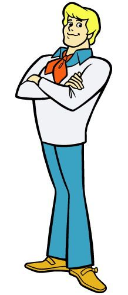

Home |
Fred
FRED JONES' PROFILE

Character Profile
- Age: 17 years old
- Height: 6 feet
- Weight: 160 lbs
- Trip Snack: Protein bars
Top 3 Missions
- "The Beast is Awake in Bottomless Lake" - Lake monster mystery
- "Foul Play in Funland" - Robot gone rogue
- "Scooby-Doo! Mystery Incorporated" - Leading the gang through major mysteries
Special Talent
He's the trap-master — always building complicated (and often malfunctioning) plans to catch villains.